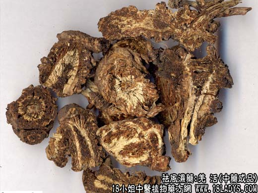
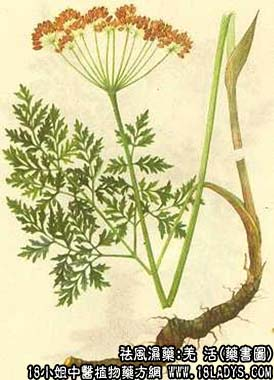

原文连接:https://www.daquan.com/post/2023.html



本品为常用中药，见于《神农本草经》的独活项下。现商品羌活和独活不是同一植物的干燥根茎和根。
别名：黑药。
来源：为伞形科多年生草本植物羌活（Notopterygium incisium Ting）的干燥根茎和根，均为野生。
产地：主产于四川、青海、甘肃、新疆。陕西、山西、云南等地亦产。
性状鉴别：本品为不规则的团状或略弯曲的长柱形，如姜块、如鸡头、如蚕、如猪尾。表皮棕褐色或棕黑色。周身密布突起的瘤结，多是须根，支根的残基，并有紧密的环状节纹。 亦有少数无环状节纹，仅有些横纹及纵皱和少数瘤结的。或一段有瘤结及环节，或一段无瘤结及环节的。顶端有一至数个茎基残痕微凹陷如鸡眼状。体轻质松脆，易碎断。横断面中心淡黄色，外围淡棕色或棕色，组织较疏松。放射状裂隙明显，如菊花心，并可见黄棕色油点（分泌腔）。气香特异，味微甘苦辣，有胡萝卜味。以条粗长，外皮棕黄色，环节紧密，断面朱砂点多者为佳。
主要成分：含挥发油。
功效与作用：1、解热发汗。2、镇痛。3、抗菌，其酒精浸剂在1：50000浓度下能抑制结核菌生长。
炮制：切片生用。
性味：辛、苦、温。
归经：膀胱、肝、肾经。
功能：散风寒湿、止痛。
主治：感冒风寒、头痛、身痛、风湿痹痛。
临床应用：1、用于治疗外感风寒。对有寒热、骨痛、头痛等表症者，尤为适宜。散风之力比防风强。
2、用于治疗风湿。凡有关节肌肉风湿，都可应用，尤其适宜于由寒湿较重而引起的上半身肌肉风湿痛，以及腰背正中部肌肉有冷感和挛缩感的患者。本品又可治与风湿有关的面神经瘫。常配独活、防风等，方如羌活胜湿汤。
3、羌活与独活各有所长，羌活性味雄烈，发汗解热的作用较强，擅长解表；独活性味较淡而和缓，除湿的作用较强；羌活、独活配伍使用，各发挥其所长，相得益彰，对治疗风湿痹痛，效果更佳。
用量：常用量3～9g。治感冒，用量宜轻，3～6g便可；治风湿，用量稍重，可用至9g。但羌活、独活同用时，两者的剂量都不宜过多，以免引起恶心等不适感。
处方举例：羌活胜湿汤（《内外伤辨惑论》）：羌活8g、独活6g、防风6g、藁本6g、川芎3g、蔓荆子4.5g、炙甘草3g，水煎服。
注：羌活习惯以产地命名，产四川者外川羌。产青海、甘肃、新疆者名西羌。羌活因产地不同，形态不同而命名分等。如团块状的名疙瘩羌，鸡头羌，形如蚕的名蚕羌，形如猪尾的名条羌，分段生有环节的名竹节羌。现商品各分一，二、三等。习惯认为蚕羌最好。以产地面分认为川羌外色棕色黑油润香味纯正较优。西羌，外皮棕褐色。欠油润、气味稍浊，次于川羌。